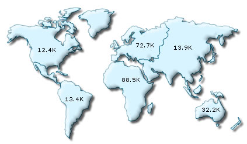
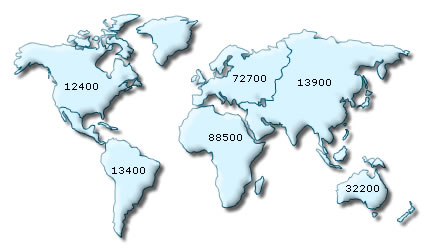

| Number Formatting in FusionMaps | |||||||||
|
|||||||||
FusionMaps v3 offers you a lot of options to format your numbers on the map. From number prefixes and suffixes to controlling the decimal places to scaling your numbers based on a pre-defined scale, FusionMaps lets you do it all. In this section, we'll see the number formatting properties supported by FusionMaps and look into number scaling in the next section. We'll start with setting decimal precisions for the numbers on map. |
|||||||||
| Controlling decimal precision | |||||||||
All the maps in FusionMaps v3 support the attribute decimals. This single attribute lets you control the decimal precision of all the numbers on the map. Using this attribute, you can globally set the number of decimal places of ALL numbers of the map. For e.g., if you have numbers on your map as 12.432, 13.4 and 13 and you set <map ... decimals='2' >, the numbers would be converted to 12.43, 13.4 and 13 respectively. |
|||||||||
|
|||||||||
Similarly, if you had data as 0.12342, 0.134 and 0.13, and you set decimals as 3, FusionMaps would output 0.124, 0.134 and 0.13 respectively. Note that even though we've set decimals to 3, FusionMaps now doesn't forcibly add the 0 padding to 0.13 to form 0.130, as the trailing 0 is un-necessary. However, if you want your numbers on the map to have trailing zeroes too, you can set <map ... forceDecimals='1' > and now the numbers would show as 0.124, 0.134 and 0.130 respectively. |
|||||||||
| Automatic number formatting | |||||||||
FusionMaps can format your numbers by adding K,M (Kilo, Million) and proper commas to the numbers. To do so, just add <map ... formatNumberScale='1' ...> Shown below is an example: |
|||||||||
|  | |||||||||
In the above image, the data for map is 12400, 13400 and 13900, 72700, 88500 & 32200. FusionMaps automatically formats the number scaling to convert to K (Thousands) & M (Millions). When showing full numbers, if you do not need the commas too, set formatNumber=0. But, setting formatNumber=0 wouldn't format any decimal places too (even if explicitly specified in XML). Shown below is an example with <map ... formatNumber='0' formatNumberScale='0' ..> : |
|||||||||
|  | |||||||||
| You can see that the commas have been removed from numbers. | |||||||||
| Setting custom thousand and decimal separator character | |||||||||
By default, FusionMaps uses . (dot) as decimal separator and , (comma) as thousand separator character. However, you can customize this character depending on your requirements. To do so, use the decimalSeparator and thousandSeparator attribute. For example, let's set our thousands separator as dot and decimal separator as comma. To do so, you'll have to use the following xml: <map ... decimalSeparator=',' thousandSeparator='.' > Shown below is the output. |
|||||||||
|
|||||||||
| Adding number prefix and suffix | |||||||||
FusionMaps allows you to add a prefix or suffix to all numbers on the map. You can use the following attributes of <map> element to attain the same:
If you intend to use special characters for numberPrefix or numberSuffix, you'll need to URL Encode them when using dataXML method. For example, if you wish to have numberSuffix as % (like 30%), you'll need to specify it as under: In dataURL method, you can directly specify the character. Examples: |
|||||||||
|
|||||||||
Next, we'll see how to utilize the new number scale formatting properties provided in FusionMaps v3. |